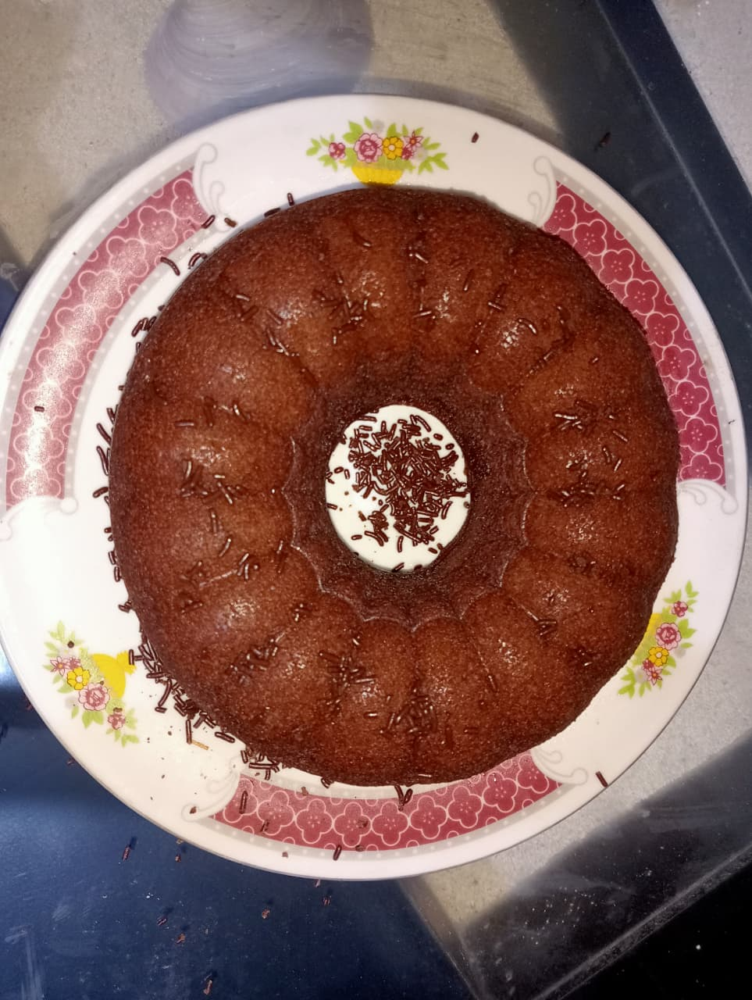
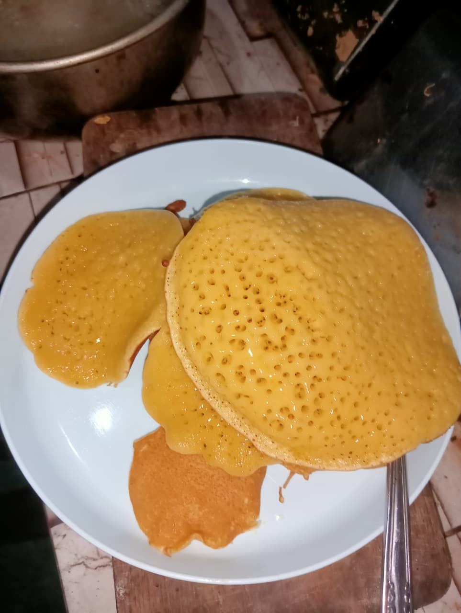
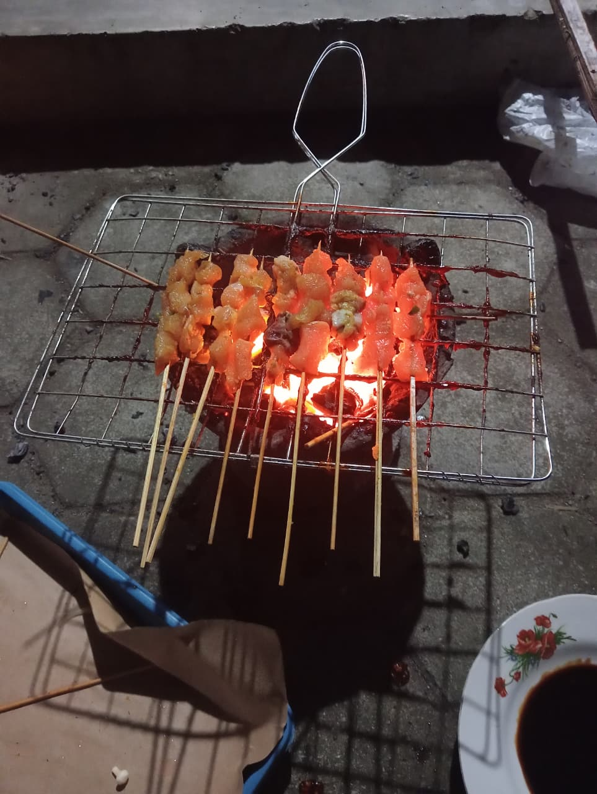
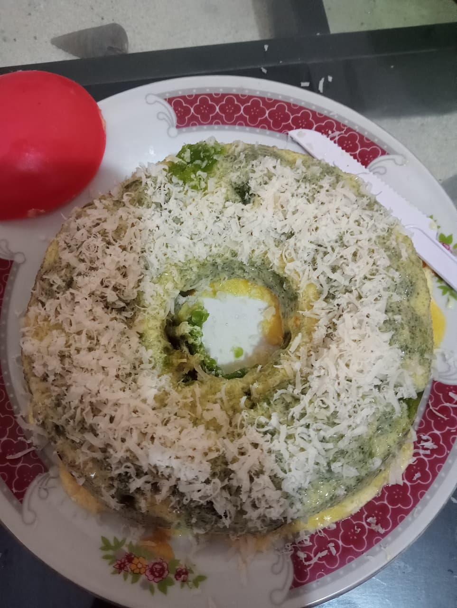
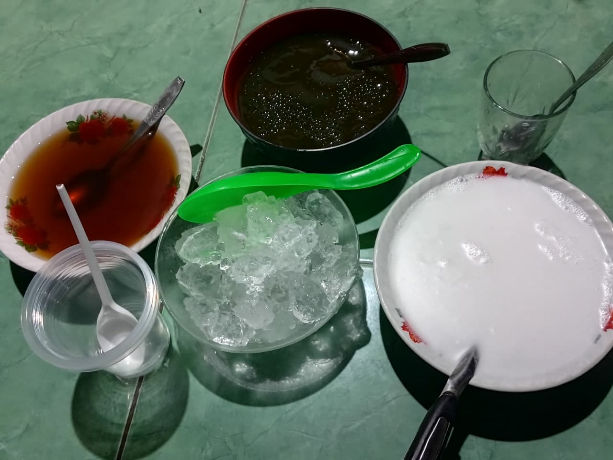
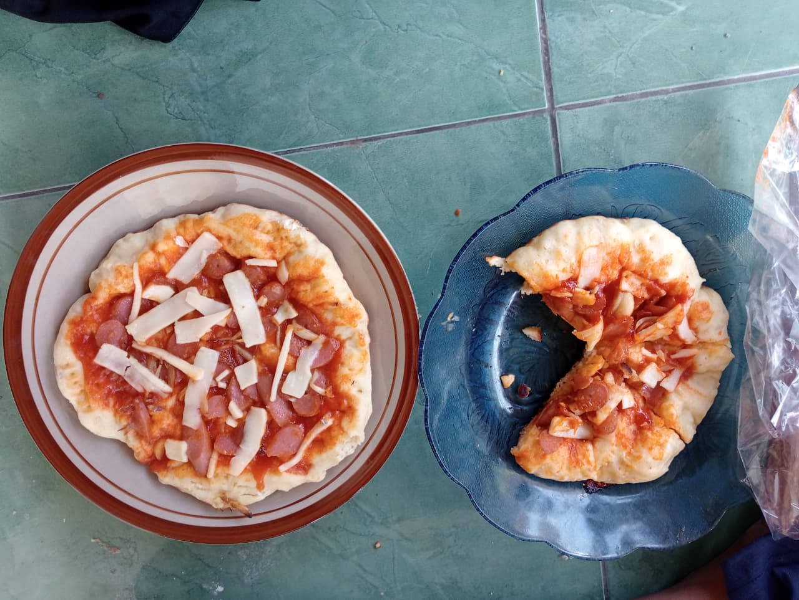

|
HOBI MEMASAK
Dokumentasi Kegiatan Kuliner & Dapur |

|
Masakan yang pernah kubuat
Mencoba berbagai resep masakan dan kue lezat.
(Petunjuk: Foto di bawah ini bisa dipencet/diklik untuk melihat ukuran penuh)
|
1. Brownies Kukus  Membuat brownies cokelat manis dengan tekstur fudgy. |
2. Mini Pancake  Sarapan manis dengan mini pancake. |
|
3. Sate Ayam  Kegiatan membakar sate bersama keluarga saat akhir pekan. |
4. Brownies Pandan  Ijo ijo royo royo. |
|
5. Camcau Hijau  Daun camcaunya jadi ini deh. |
6. Pizza  Nyuba buat makanan luar. |